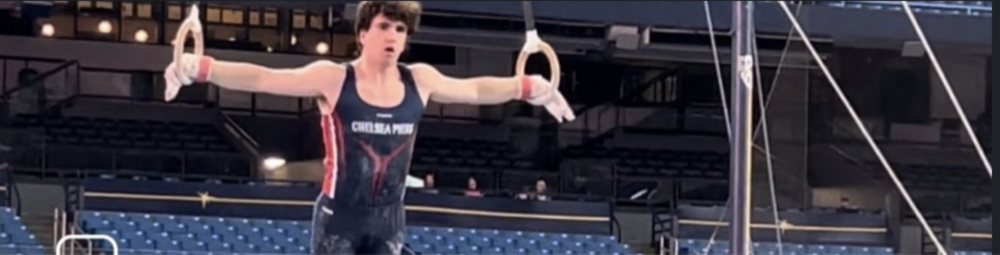

Athletics / Chelsea Piers
Gymnastics
Nationally ranked Level 10 gymnast and Chelsea Piers team captain after fourteen years in the sport.

Athletics2010 - 2024
Competitive Gymnastics
Ezra trained and competed with Chelsea Piers for fourteen years, advancing to nationally ranked Level 10 competition and serving as team captain. The experience demanded precision, composure, iterative skill development, and sustained commitment.
- Nationally ranked Level 10 gymnast.
- Chelsea Piers team captain.
- Competed through 2024 after thirteen-plus years of training and competition.